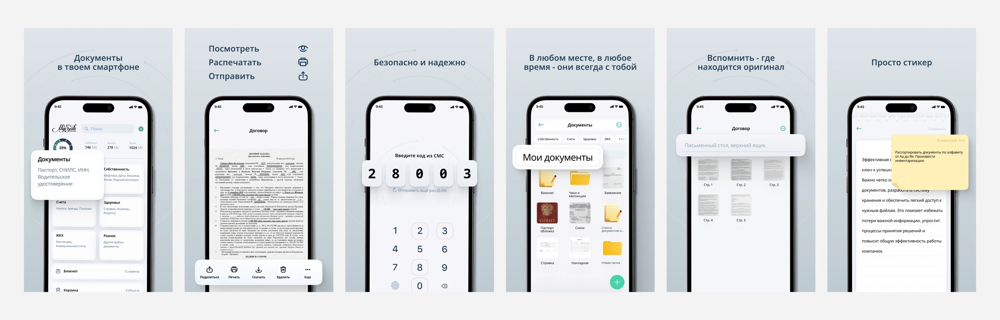

UX/UI Designer · МДК
My Safe Online
Документы всегда под рукой

Задача
Помочь человеку хранить документы в одном месте, быстро находить нужный файл и помнить, где лежит бумажный оригинал.
Моя работа
Спроектировал сценарии хранения, поиска и отправки документов, структуру экранов и UI Kit. Проработал доступ к приложению, папки, заметки и состояния интерфейса.
От документа к действию
Главная открывает доступ к документам и заметкам. Папки помогают организовать файлы, а заметки — сохранить связанный с ними контекст.


Быстрый доступ
Поиск, избранное и структура папок сокращают путь к нужному документу.
Понятные состояния
Пустые папки, сохранённые файлы, удаление и корзина — часть общего сценария работы.
Настройки доступа
Отдельно проработаны вход, PIN-код, смена телефона, почты и пароля.
Следующий проектTempick KIDS